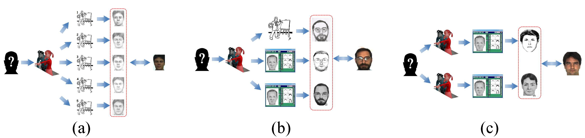
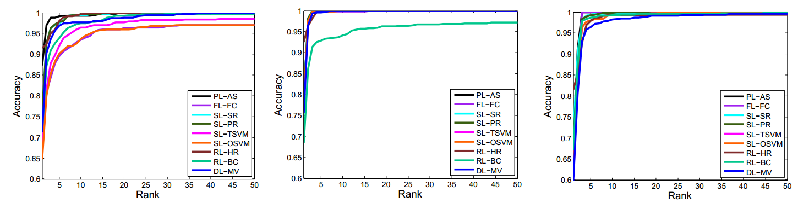
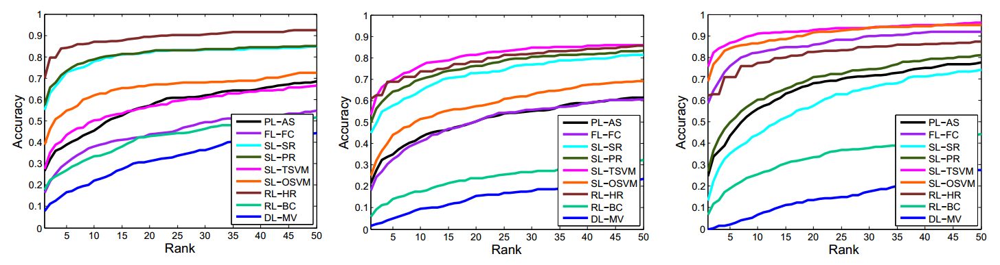
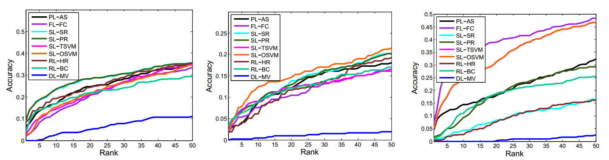

Face Recognition from Multiple Stylistic Sketches:
Scenarios, Datasets, and Evaluation
Xidian University

Fig. 1. Illustrations of the proposed three scenarios of face recognition from multiple stylistic sketches. (a) Scenario-MHS: recognition from multiple hand-drawn sketches drawn by different artists; (b) Scenario-MHCS: recognition from a hand-drawn sketch and multiple composite sketches produced by different software tools; (c) Scenario-MCS: recognition from multiple composite sketches from different software tools.
Abstract
Matching a face sketch against mug shots, which plays an important role in law enforcement and security, is an interesting and challenging topic in face recognition community. Although great progress has been made in recent years, main focus is the face recognition based on SINGLE sketch in existing studies. In this paper, we present a fundamental study of face recognition from multiple stylistic sketches. Three specific scenarios with corresponding datasets are carefully introduced to mimic real-world situations: (1) recognition from multiple hand-drawn sketches; (2) recognition from hand-drawn sketch and composite sketches; (3) recognition from multiple composite sketches. We further provide the evaluation protocols and several benchmarks on these proposed scenarios. Finally, we discuss the plenty of challenges and possible future directions that worth to be further investigated. All the materials are publicly available for comparisons and further study of this problem.
Datasets
Experiments
-
Experiment in Scenario-MHS

The mat files to draw the curves above can be downloaded here.
-
Experiment in Scenario-MHCS

The mat files to draw the curves above can be downloaded here.
-
Experiment in Scenario-MCS

The mat files to draw the curves above can be downloaded here.
Citation
-
C. Peng, N. Wang, X. Gao, and J. Li. Face Recognition from Multiple Stylistic Sketches: Scenarios, Datasets, and Evaluation. European Conference on Computer Vision workshop on Visual Analysis of Sketches, 2016, pp. 3-18.